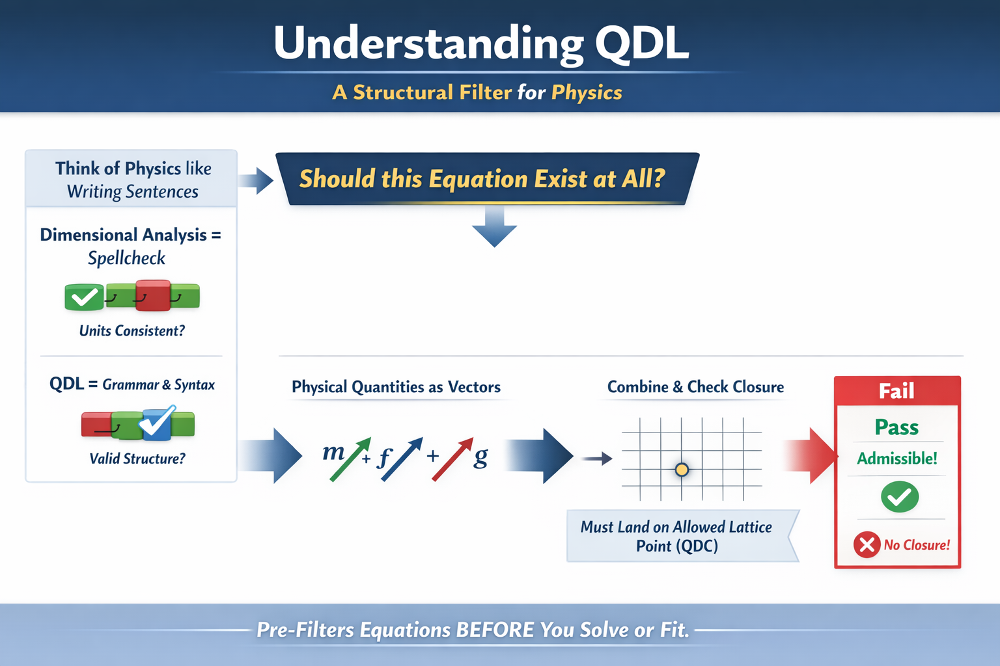

The Quantized Dimensional Ledger: A Structural Admissibility Framework for Physics
QDL introduces a prior structural question before model fitting or dynamical elaboration: should a proposed physical expression exist at all?
Standard dimensional analysis checks consistency. QDL investigates whether physically admissible representations must remain closed under repeated composition.

Why closure? Physical models are not evaluated once—they are composed, iterated, renormalized, and measured through chains of transformations. Standard dimensional analysis ensures consistency at a single step but does not guarantee stability under repeated composition. The QDL framework investigates whether physically admissible representations must instead form a closed structure under iteration. The 3L + 2F lattice is proposed as the minimal basis in which such closure can be defined and tested. The framework is developed across effective field theory, cosmology, metrology, and measurement theory, with explicit falsifiability conditions.
April 2026: The QDL–SO10–1 executable grand-unification benchmark sequence is now complete. The nine-paper series advances the benchmark from an initial SO(10)-compatible proposal to an executable, scalar-hardened, proton-decay-exposed, flavor-tested, leptogenesis-viable closure package.
This sequence is presented as a benchmark-level grand-unification program, not as a final theory of nature. Its purpose is to make QDL-based unification claims auditable, reproducible, and explicitly falsifiable.
April 2026: The Quantized Dimensional Ledger for Metrology: Dimensional Closure, QMU Ledgers, and the Ontology of Physical Constants is now published in the Journal of Theoretical and Applied Physics: Bourassa, J. D. (2026). The Quantized Dimensional Ledger for Metrology: Dimensional Closure, QMU Ledgers, and the Ontology of Physical Constants. Journal of Theoretical and Applied Physics, 20(3). https://doi.org/10.57647/jtap.2026.2004.05
This marks the first peer-reviewed journal publication for the QDL research program and establishes a formal publication anchor for the framework’s metrology application.
May 2026: QDL Physics Institute has filed U.S. Provisional Patent Application No. 64/055,985, titled Systems and Methods for Structural Admissibility Validation of Physical Measurement and Modeling Pipelines.
This filing marks the executable infrastructure phase of QDL: applying structural admissibility as a machine-executable validation layer for measurement, modeling, simulation, uncertainty analysis, AI-generated scientific outputs, sensor fusion, digital twins, and related technical workflows.
The purpose is practical rather than speculative: to test whether QDL-style ledger mapping, closure checks, audit traces, and downstream workflow controls can identify structural failures that ordinary unit checking or dimensional homogeneity may not detect.
Status: U.S. provisional patent application filed; patent pending.
May 2026: A new QDL gravitational dynamics paper has been released: Bourassa, J. D. (2026). The Quantized Dimensional Cell in Gravitational Dynamics: GM, Keplerian Closure, and Dimensional Admissibility. Zenodo. https://doi.org/10.5281/zenodo.20026718
This paper identifies the gravitational parameter μ = GM as a direct realization of the Quantized Dimensional Cell form, L3F2, and interprets Keplerian closure as μ = r3ω2 for circular motion and μ = a3n2 for elliptical Keplerian motion.
The result complements the patent-pending executable infrastructure track by showing how QDL closure concepts continue to organize concrete physical domains while the program also develops practical validation tools.
What Changes When You Apply QDL
A second-pass view: from open-ended model building to constrained, testable structure.

Core takeaway: QDL reduces the space of admissible physical models before data is ever considered.
The QDL research program is currently focused on:
- Peer-reviewed publication of the integer-lattice structure underlying dimensional quantities.
- Development of dimensional-closure constraints for effective field theory operator bases.
- Residual-first benchmark comparisons using publicly available experimental datasets.
- Design of falsifiable laboratory tests probing dimensional-closure scaling relations.
- Development of executable structural-admissibility infrastructure for measurement, modeling, simulation, AI scientific-output validation, sensor fusion, and digital-twin workflows.
Program status: Active research, executable infrastructure development, and manuscript submissions in progress (2026).
U.S. Provisional Patent Application No. 64/055,985, Systems and Methods for Structural Admissibility Validation of Physical Measurement and Modeling Pipelines, was filed in May 2026 to protect the executable infrastructure direction while the scientific framework remains publicly documented through DOI-backed research records.
The QDL Physics Institute is an independent research program based in Huntley, Illinois, USA, focused on the development and testing of the Quantized Dimensional Ledger (QDL) framework for dimensional closure, model admissibility, and experimental discrimination.
Research areas: dimensional structure of physical quantities, effective field theory constraints, dimensional closure in metrology, model integrity, executable validation infrastructure, and falsifiable tabletop experiments.
Director: James D. Bourassa | ORCID: 0009-0008-0155-0051
The fastest way to evaluate the QDL program is the following sequence:
- Integer Lattice Structure of Dimensional Quantities
- The Quantized Dimensional Ledger: A Lattice Structure for Dimensional Closure in Physical Theories
- Ledger-Closure Constraints on the SMEFT
- Executed Benchmark Records
The QDL framework is intended as a dimensional admissibility constraint layer, not a replacement for established physical dynamics.
Research Snapshot
Three entry points into the program: formal structure, technical record, and practical support materials.
Research Program
A consolidated overview of the QDL framework, dimensional lattice structure, model admissibility, and experimental logic.
Publications
Core papers, benchmark records, and application papers organized in a framework-first sequence for technical readers.
Resources
Prototype demonstrations, books, benchmark access points, and orientation material that support review and navigation.
Interactive QDL Tool
A live entry point for testing structural admissibility under declared closure rules.
Test declared vectors against canonical closure rules, explore admissible and inadmissible configurations, and use the built-in SMEFT ℤ₆, dimensional-failure, and metrology examples.
The calculator provides a live demonstration layer for the QDL framework and a compact report-ready summary of each result.
Latest Program Updates
Recent publications, benchmarks, and program milestones.
- May 2026: U.S. provisional patent application filed — Systems and Methods for Structural Admissibility Validation of Physical Measurement and Modeling Pipelines. This filing marks the executable infrastructure phase of QDL, including measurement integrity, AI scientific-output validation, software analysis, sensor-fusion filtering, and digital-twin validation. Patent pending.
- May 2026: New Zenodo preprint released — The Quantized Dimensional Cell in Gravitational Dynamics: GM, Keplerian Closure, and Dimensional Admissibility . This paper identifies the gravitational parameter μ = GM as a direct QDC-form realization, L3F2, and interprets Keplerian closure as μ = r3ω2.
- Apr 2026: QDL–SO10–1 executable GUT benchmark sequence completed — capstone record: Executable Closure of the QDL–SO10–1 Benchmark .
- Apr 2026: Journal article published — Bourassa, J. D. (2026). The Quantized Dimensional Ledger for Metrology: Dimensional Closure, QMU Ledgers, and the Ontology of Physical Constants. Journal of Theoretical and Applied Physics, 20(3). https://doi.org/10.57647/jtap.2026.2004.05
- Mar 2026: Preprint released — The Quantized Dimensional Ledger: A Lattice Structure for Dimensional Closure in Physical Theories
- Mar 2026: Foundational paper released — Integer Lattice Structure of Dimensional Quantities
- Dec 2025: Residual-first benchmark records published for NV ODMR and optical cavity datasets.
- Mar 2026: Program book record maintained — The Quantized Dimensional Ledger: A Structural Framework for Dimensional Coherence in Physics
Foundational Papers
The shortest technical path into the QDL program.
Start with the Research Program page for the conceptual structure, then move to Publications for the technical record. Use the QDL Calculator for a live demonstration of structural admissibility, and Resources for books, prototypes, and benchmark access.
This structure is meant to make the site read like a coherent research institute rather than a collection of separate project pages.
Research Goals
Near-term objectives of the Quantized Dimensional Ledger research program.
- Formal development of dimensional closure as a structural admissibility constraint on physical representations.
- Investigation of consequences for operator structure in effective field theories and related frameworks.
- Development of benchmark methodologies for transparent model adequacy testing using public datasets.
- Design of falsifiable tabletop experiments capable of distinguishing dimensional-closure predictions from conventional parameterizations.
- Development of executable QDL validation tools for physical measurement, modeling, uncertainty analysis, AI scientific-output checking, sensor fusion, and digital-twin workflows.
Citable Program Record
Archival records and DOI-backed materials for the Quantized Dimensional Ledger research program.
The QDL research program maintains a DOI-backed archival record through the Zenodo repository. Core manuscripts, benchmark records, and supporting materials are preserved as citable research artifacts.
- Zenodo Community Archive: QDL Physics Institute Collection
- Program Book Record: The Quantized Dimensional Ledger: A Structural Framework for Dimensional Coherence in Physics
- QDL Gravitational Dynamics Record: The Quantized Dimensional Cell in Gravitational Dynamics: GM, Keplerian Closure, and Dimensional Admissibility
- QDL–SO10–1 Capstone Record: Executable Closure of the QDL–SO10–1 Benchmark
- Core Framework Papers: See the Top 5 Publications for the recommended technical entry path.
Maintaining DOI-backed program records supports long-term citation, reproducibility, and accessibility of the QDL research program.
Collaboration & Support
The QDL Physics Institute welcomes collaboration with researchers, experimental groups, and institutions interested in dimensional structure, measurement integrity, executable validation infrastructure, or falsifiable tests of the Quantized Dimensional Ledger framework.
The program also welcomes philanthropic or institutional support that enables continued development of open, DOI-backed research records, executable validation tools, and experimental benchmark studies.
For collaboration inquiries or discussion of potential support, please contact james.bourassa@qdlphysics.org.